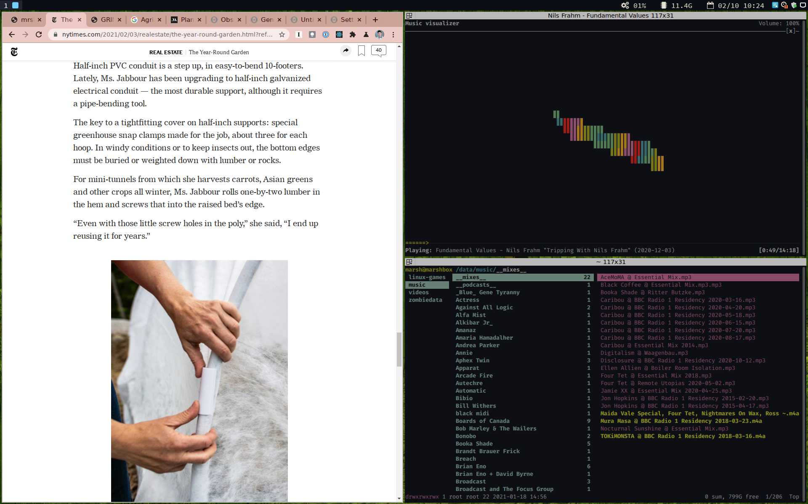
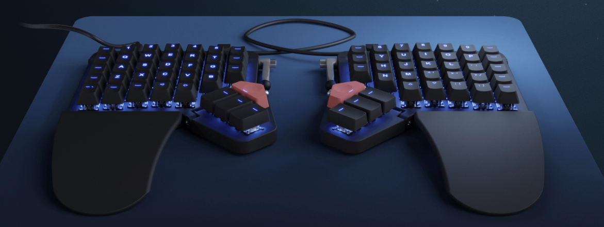

I am opinionated about my tools, but I oscillate wildly between upcycled stand-ins and high quality last-forevers. In general the goal is to have fewer "items," but new hobbies and projects often come with their accoutrements. And I am a person who has a lot of projects.
This list captures the tools and miscellanea that I would be hamstrung without.
Computing

*i3wm* - i3 is a tiling window manager built for X11. It organizes windows across screens in non-overlapping frames. This may sound familiar; many other operating systems have keyboard shortcut-driven approximations wherein you can snap windows around. i3 supports a powerful combination of shortcuts (built for someone with VI bindings etched into their brain) that manipulate the tree of tiled windows. It's easily customized and there are entire OS distributions built around it like Regolith Linux.
*Regolith* - a linux distribution built on Ubuntu, GNOME, and i3. It has fantastic package defaults and a design methodology that works out of the box while still allowing for needed customization.

*Moonlander Mark I* - an impulse buy one day realizing the core role typing plays in my life and profession. This keyboard is incredible - mainly due to its onboard firmware that remaps keys before any instruction is sent to the OS. This is important for me because I rely on a few key remappings - ESC to CAP, for example. The first two weeks of owning the keyboard were brutal. I could hardly write a word without misfires. Having spent time with it, I now think my typing is more efficient, and my hands do not move, even for symbols and modifier keys. It was a great investment.
Communication
*fastmail* - minimal and clean hosted email for my domain.